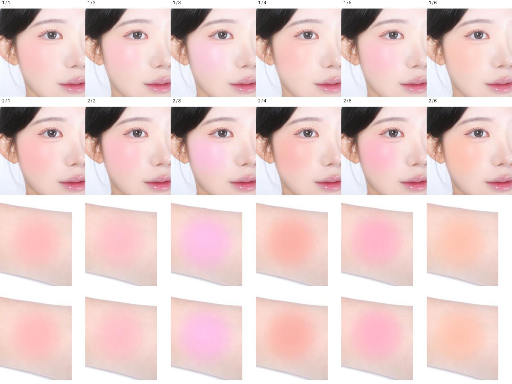

2026.10.20 · 방법과 순서 재검토 · 고객용 상세는 이번 검토에서 변경하지 않음
제형을 이해한 뒤,
볼에서 보이는 색을 고르게.
현재 구성의 문제: 히어로 다음에 손목 색상표가 나오고, 이름이 붙은 얼굴 발색은 모두 빠졌습니다. 크림투파우더를 이해하는 단계와 볼에 발랐을 때를 판단하는 단계가 약해졌습니다.
판단 수정: 별도 모델 분위기 컷은 생략할 수 있지만, 얼굴 발색은 컬러 선택에 쓰이는 자료입니다. 강한 볼 색을 해결하는 과정에서 그 역할까지 제거한 것은 적절하지 않았습니다.
추천하는 순서
| 1 · 히어로 | 기존 탐뷰티 제품 사진과 “크림처럼 사르르, 파우더처럼 보송하게.” 유지 |
| 2 · 제형·사용 | 기존 제형·도포 영상 + 짧은 사용법. 어떤 제형이고 어떻게 쓰는지 먼저 이해 |
| 3 · 6색 비교 | 한 호수 안에 얼굴과 손목을 함께. 이름은 한 번, 톤 설명은 한 줄 |
| 4 · 성분 | 네 가지 오일·비건을 보조 정보로 정리 |
| 5 · 제품 마무리 | 기존 컬렉션 사진 + 제품명·용량. 사용법을 반복하지 않음 |
| 6 · 제품정보 | 현재의 작은 HTML 정보와 전성분 유지 |
이는 구매 과업과 사용자 피드백을 바탕으로 한 설계 권고입니다. 전환율이 입증된 순서라는 뜻은 아닙니다. 프레시안 공식 상세의 발색 선행 순서를 그대로 따르는 대신, TAM의 크림투파우더 이해를 먼저 두는 수정안입니다.
얼굴과 손목은 같은 색 안에서 함께
볼 전체에서 색이 어떻게 보이는지, 피부와 경계가 어떻게 어우러지는지 판단하는 주 이미지.
옆 호수와 색조·밝기 차이를 비교하는 보조 이미지. 얼굴 아래 충분한 크기로 배치.
권장 카드: 색상명 → 얼굴 가로 컷 → 같은 호수 손목 컷 → 짧은 톤 설명. 기존 2열 × 3행을 유지하고, 얼굴 갤러리와 손목 갤러리를 따로 반복하지 않습니다. 여섯 제형 덩어리 사진은 이 구간에서 덜어내고 제형 구간에 역할을 맡깁니다.
손목은 좁은 띠로 자르지 않습니다. 원비율 또는 발색 경계가 남는 사각 프레임을 실제 모바일 크기로 비교한 뒤 결정합니다. 얼굴 추가로 길어지는 만큼 불필요한 이미지·설명을 줄입니다.
얼굴 사진은 바로 복귀시키지 않고 선정 기준부터

03·05호는 1차 얼굴 컷이 2차보다 덜 강하게 보입니다. 그러나 덜 진하다는 이유만으로 실제 색에 더 가깝다고 판단할 수는 없습니다. 손목은 두 리비전이 같은 파일입니다.
선정 기준: 호수 매칭, 같은 조건·같은 리비전의 6색 통일, 손목과 얼굴의 색 방향 차이, 제공된 색 검수 기준을 함께 확인합니다. 색 검수 기준은 아직 확인되지 않았습니다. 채도 조절·AI 덧칠로 맞추거나 호수마다 유리한 리비전을 섞지 않습니다.
교차 검토에서 반영한 것
클로드와 순서·모바일 길이·소스 선정 기준을 다시 검토했습니다. 얼굴과 손목은 역할이 달라 함께 둘 이유가 있으며, 원본 6색의 일관성과 모바일 크기를 먼저 확인해야 한다는 점을 반영했습니다. 제형 스틸 1장을 추가하자는 제안은 자료의 반복과 GIF 실제 표현을 확인한 뒤 판단할 사항으로 남겼습니다.
현재 공개본은 수정 필요 상태이며 최종 승인본이 아닙니다. 이번에는 검토안만 작성했습니다. 카페24 업로드는 보류 상태입니다.